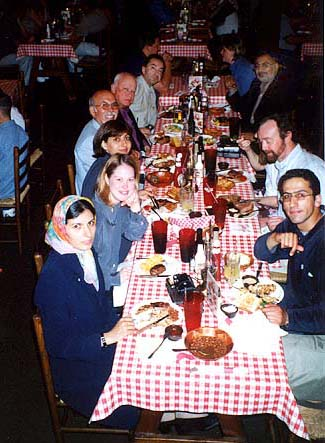
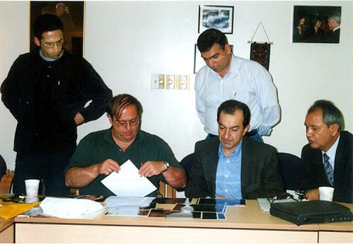
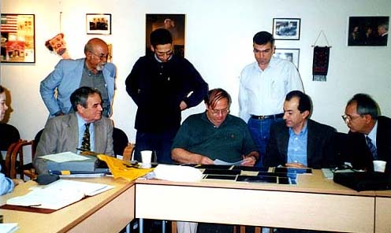
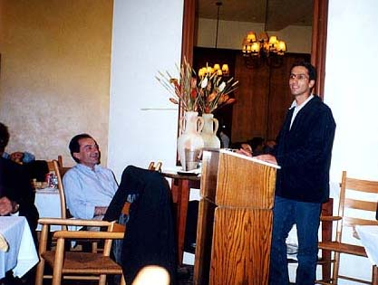
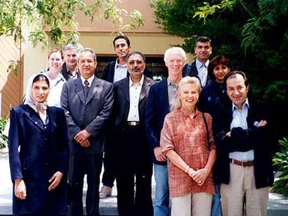
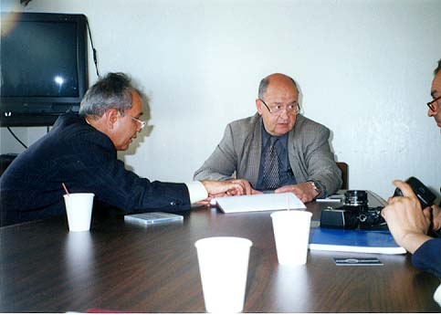
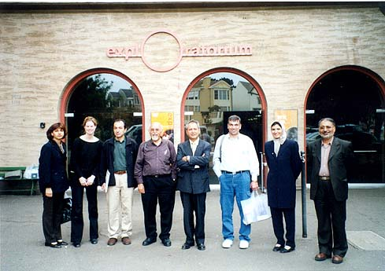
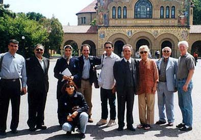
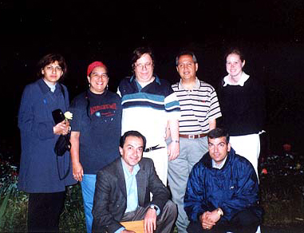
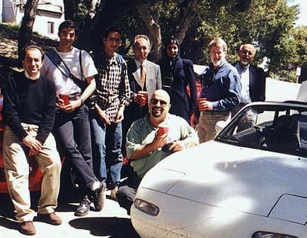

Alan Hale, Doug Biesecker and Ali Parsa, Washington DC.
A
Science Trip to the USA
May 2001
The pictures in this page are taken from Alireza Mehrani's site.
Alan Hale, Doug Biesecker
and Ali Parsa, Washington DC.

Dining in a cowboy restaurant
in Denver. Clockwise: Neda AbbasNejad, Stacy Heen, Nasrin Sadeghi, Dr.
Kiyasatpour, Bruce McCandless, Ali Parsa, Dr. Sassan,...,..., Babak
Amin-Tafreshi.

Alan Hale looking at
astronomical pictures presented to him by Alireza Mehrani.


Babak Amin-Tafreshi
delivering a presentation about astronomy in Iran, Society of Iranian
Professionals, Mountain View, CA.

The group after an excellent
presentation at SETI, Mountain view, CA.

Mostafa Torabizadeh
explaining ZSF activities to Dr. Go?y Delac?e, Executive Director of the
Exploratorium.


The group in front of the
Stanford University's Memorial Church.

With Charles Morris of the JPL and his wife at their house near Los Angeles.

At Mt. Wilson Observatory on the mountains near LA.